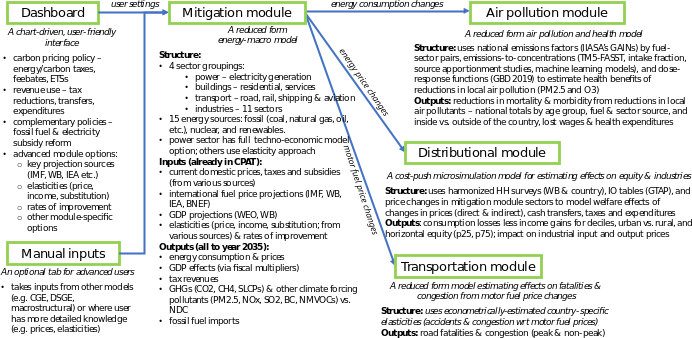
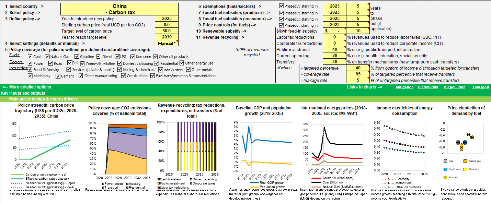
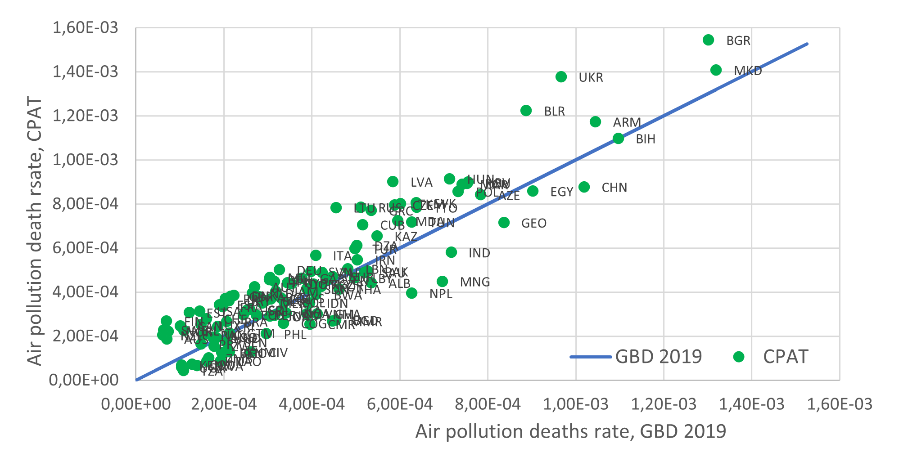
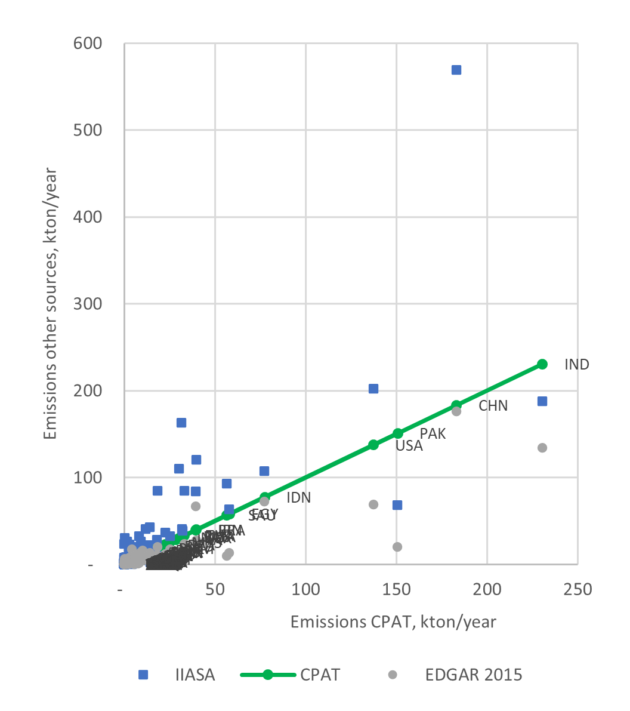
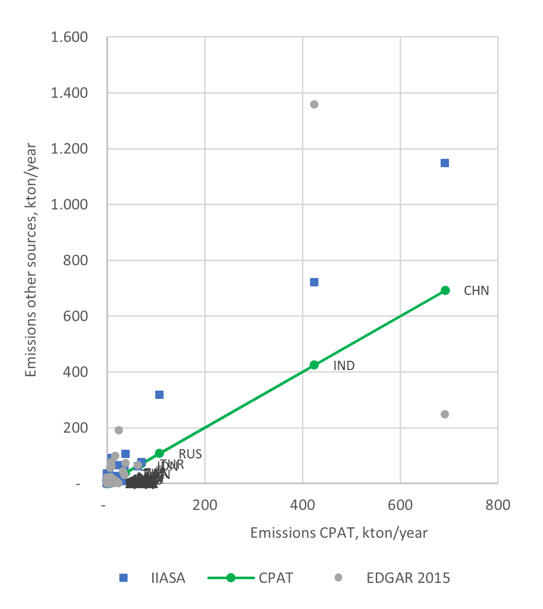
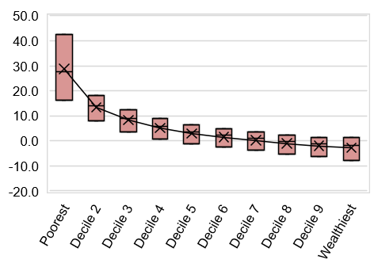
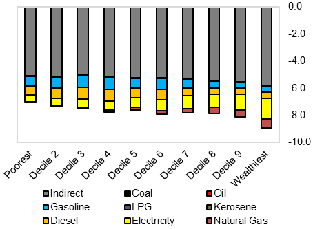
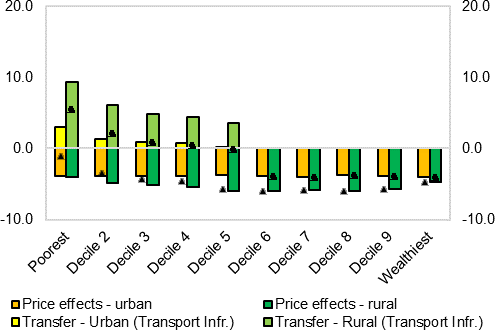
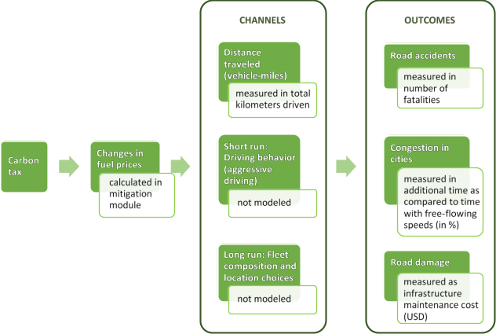

2 Summary of the approach and applications
2.1 Background and introduction
Ending poverty while managing climate change are defining challenges of this century. In recent years, these twin objectives have become enmeshed normatively and enshrined institutionally. In the last three years, 193 countries committed to achieving 17 Sustainable Development Goals (SDGs)—from tackling poverty, hunger, and gender disparities to improving health, energy access, and education. In addition, 195 countries committed in the Paris Agreement to limit global warming to “well below” 2 degrees Celsius by the end of this century. Notably, over 130 developing countries committed to national emissions abatement (through Nationally Determined Contributions, NDCs), for the first time. As a result, these countries need policy instruments to help them achieve their SDGs and NDCs.
Environmental tax reform (ETR) has been proposed as one of the important parts of our toolbox to do so. ETR can help developing countries reap substantial benefits, far beyond those of climate action.
More than two decades of research in development and environmental economics suggests that the welfare of ETR effects are likely to be more positive in developing countries than is commonly understood. Development co-benefits, such as direct improvements in human health or reductions in congestion and accidents, can be very large in developing countries, where air pollution kills millions and congestion reduces the benefits from agglomeration externalities and urbanization. ETR can also help finance ministries raise much-needed domestic funds at lower cost than some conventional sources of public revenues. These revenue gains can help expanding public expenditure, building health care and social protection systems, as well as investing to achieve universal access to infrastructure services such as modern energy, water and sanitation, mobility and access to information and communication. Because ETR can be simple to design and implement, low administrative capacity and political support need not hinder reform efforts.
In short, ETR can be the fiscal foundation upon which developing countries achieve both the SDGs and their NDCs. With the COVID-19 crisis, it is widely accepted that economic stimulus and restoring sound public finances are both needed, and that the recovery process can be designed to contribute to sustainable development. In particular, countries with financing constraints may want to consider energy subsidy reforms or even explicit carbon pricing to finance urgent needs in health, social sectors or growth-enhancing tax shifts. In the second phase of the recovery, when fiscal consolidation will become pressing, further discussion on the potential of energy taxes is essential. In this context, finance ministries can use CPAT to evaluate such reforms. Another key function of the tool is to help mainstream carbon pricing into WB/IMF country work. CPAT is thus aimed at economists in the World Bank and the IMF as well as finance ministries (via the Coalition of Finance Ministers for Climate Action) and planning & line ministries.
The Climate Policy Assessment Tool (CPAT) is a spreadsheet-based tool to support these efforts. It allows for rapid estimation of effects of carbon pricing and fossil fuel subsidy reforms along several economic and non-economic dimensions. These include key macroeconomic variables, energy consumption, local and global pollutants, ‘development co-benefits’, distribution/equity and poverty. Its objectives are to:
Help decision-makers and analysts do quick diagnostics on the potential benefits from explicit carbon pricing and fossil fuel subsidy reforms to inform SCDs and other country strategies;
Provide first estimates of benefits across different dimensions (from tax revenues to health) to start an engagement with country counterpart and identify areas where more in-depth analyses are needed or promising.
For instance, CPAT is used for the EFI EU Regular Economic Report, which informs the EU’s consideration of environmental fiscal reforms; Mexico’s Public Finance Review, which examines its carbon tax; reviews of health-related tax reform option for Brazil and China (with Health GP); Ivory Coast’s PMR program; CGE and macrostructural models for Pakistan, Italy, Vietnam (within the MTI macro-modelling team); and for TA to Northern Macedonia’s on environmental tax reform review (ETR). CPAT can contribute to various reports products within the WB (SCDs, CPFs, DPOs, CEMs, State & Trends). CPAT has e.g. formed the analytical basis for a Bank-Fund report to the Coalition of Finance Ministers for Climate Action on carbon pricing.
CPAT is being developed jointly by the World Bank and IMF. It evolved from an earlier IMF tool, described in Appendix III of a 2019 Board Paper “Fiscal Policies for Paris Climate Strategies” and further applied in the IMF’s October 2019 Fiscal Monitor on “How to Mitigate Climate Change”. Background research for the various channels modeled has been completed by the CPAT team, notably through the studies “Benefits beyond Climate” and “Getting Energy Prices Right”.
2.2 CPAT dashboard and outputs
The CPAT tool is primarily a dashboard. It allows the user to input choices regarding the policy under investigation (such as a carbon tax trajectory, with different options for exemptions and recycling of the revenues) and modeling choices (e.g., choice between different data sources). The tool produces a series of assessment and visualization of the impact of the policy scenarios on several dimensions including:
mitigation and energy efficiency (i.e., the reduction in GHG emissions, changes in energy consumption);
macroeconomic and fiscal aggregates (GDP, tax revenues);
air pollution and health (concentration, but also mortality and morbidity);
transport (road fatalities and congestion);
distributional impacts (per consumption decile, but also by (urban/rural) sub-sample, and industrial cost changes)
A schematic view of the tool is provided in Figure 2.1, and a screenshot of the dashboard is provided in Figure 2.2. It is expected that the tool is used to explore various policy options, either in an interactive way, or to create country-specific document.
The tool is calibrated on 150 countries, but the user is advised to remain cognizant of data issues, which can affect the quality of the assessment. The Distribution module is more limited, as it depends on the specific treatment of household surveys. This module is currently available for 64 countries, but additional countries will be continuously added over time.


2.3 CPAT structure and methodology
This section provides a summary of the methodology (or methodologies) used by each of the modules, as well as basic comparison with state-of-the-art models. The value of CPAT is to be consistent with these state-of-the-art models in each dimension, and to provide in one place all these dimensions together to facilitate analysis and comparisons and help teams prepare country diagnostics. For the interested reader, in-depth methodological notes are available for each module (CPAT chapters documentation here).
2.3.1 Mitigation module
The mitigation module is a simplified reduced-form model of fuel consumption, deriving quantities under a baseline and a policy scenario broadly in line with more complex models (the IEA’s World Energy Model, Enerdata POLES). The mitigation module’s primary goal is to predict energy use, energy prices, emissions, carbon tax revenues, and GDP effects over the time horizon of CPAT (2019-2035). More details are available below in the methodological notes.
The module takes four types of inputs: (1) energy balances and price inputs; (2) external forecasts (baseline international energy prices and macro indicators); (3) parameter inputs (elasticities, fiscal multipliers); (4) user-specified policy inputs (for example, the level and coverage of a carbon tax, exemptions phase-out and other inputs).
The module’s outputs include energy consumption by fuel type and sector, greenhouse gas emissions (CO2 and other GHG such as leaked methane), fiscal revenues and GDP effects, price changes, power generation, and power sector investment.
The mitigation module forms the core of CPAT: when the user chooses a policy in the dashboard, the mitigation module works out the direct impact of the policy, displays it in the dashboard, and passes the outputs on to other modules (see Figure 2.1).
The general approach to determining baseline fuel consumption and the response to a carbon tax or other policy is a simplified, reduced-form model based on income and price elasticities. The changes in energy consumption from the base year are driven by energy prices (including the influence of mitigation policy) and real (total) GDP. Real GDP adjusts to changes in fiscal policy through multiplier effects. It can be considered the main driver of the baseline, while energy prices are the primary driver of any policy, such as a carbon tax. Exogenous changes to efficiency and the price of renewable energy are also drivers of fuel use and consumption.
For data and parameter sources, see the mitigation chapter. For example, elasticities with regard to prices and income are derived from Burke and Csereklyei (2016)1 using the relationship from Gertler and others (2016).2
The mitigation module includes two power sector models, an ‘elasticity-based’ model and a hybrid techno-economic dynamic model (‘engineer model’) of the power sector with explicit capital stock. The two models use the same power demand elasticities and separately consider power generation’s costs by type. The user can either select ‘average’ – meaning an average of both models – or tailor the model using the engineer model alone
The ‘elasticity-based’ model uses marginal increases in fuel prices and price elasticities to determine the shares of each generation type. It is simple, transparently parameterized, easily explainable, and easily deployable in an Excel spreadsheet model used in previous versions of CPAT and IMF tools.
The techno-economic ‘engineer’ model explicitly models the capacity of different generation types, with capacity3 expanding to meet desired power demand. Flexible capacity (gas and coal) is allocated according to marginal price, with a sigmoidal function of relative price. Investment is also a function of levelized cost, with a system penalty for the cost of integrating high levels of renewable penetration. Transmission losses are modeled as a fixed quantity of total generation.
The main advantage of the engineer model’ is that it allows modeling decisions changing the stock of assets in the power sector (investment and retirement) and decisions changing the use of assets for power generation (dispatch). In addition, the model allows the user to define a Variable Renewable Energy (VRE) scale up rate. The rates reflect a ‘linear’ type constraint. It constrains generation in VRE additions to be a certain percentage of total generation (in gross additions, not net of retirements). The model is consistent with countries’ generation capacities and makes it possible to investigate the radically different power systems consistent with high carbon prices, while the empirical ‘elasticity-based’ model is valid only for more marginal changes.
Finally, as one of the main outputs, the mitigation module estimates carbon pricing effects on GDP. CPAT adjusts the baseline GDP growth forecasts endogenously depending on different carbon pricing and revenue recycling scenarios. The module captures two channels: the fiscal effects and the impact on consumption. In the first channel, a carbon tax has both direct and indirect effects on GDP. The latter arises when the carbon tax revenues are recycled as a reduction of other taxes and/or increased government spending. We quantify these effects using the CPAT fiscal multipliers estimates. In the second channel, the change in GDP affects energy consumption and, therefore, the effective carbon tax revenues. This channel is captured by the income elasticities of energy demand.
CPAT uses four sources of fiscal multipliers: “Income-group” multipliers and “global” averages are obtained from the World Bank’s Macro-Fiscal Model (MFMod). “Estimated” multipliers are obtained econometrically from panels of high- and low-income countries created along the dimensions of income levels, regions, debt levels and trade openness. Country-specific multipliers are then obtained as weighted averages over the respective multipliers from each sample/subsample which the country is part of. Finally, since multipliers tend to be higher during expansions and lower during contractions, all baseline multipliers can be adjusted upwards and downwards by adding/subtracting one empirical standard deviation. This takes into account the uncertainty around empirical estimates and gives the CPAT user additional flexibility in choosing the appropriate set of multipliers. Finally, the user has the option to “manually” enter the preferred multipliers, thereby allowing for a thorough exploration of the uncertainty in these parameters.
A full summary for reviewers including a list of change and full information about the validation of the mitigation module against ex post studies and other models, is available in the mitigation chapter of this report. See section 3.9.
2.3.2 Air Pollution module
Policies aimed to reduce GHG emissions, such as carbon pricing, can lead to a reduction in ambient air pollution due to the co-emission of GHGs and local pollutants when burning fossil fuels. Local pollutants, such as BC, OC, NH3, SO2 and NMVOC are responsible for the formation of fine particulate matter (PM2.5) and ozone (O3) pollution. These pollutants contributed to 6.67 million deaths and 213 million DALYs in 2019 (Institute for Health Metrics and Evaluation). Air quality improvements will reduce mortality and morbidity and CPAT quantifies those effects as a co-benefits of carbon pricing.
The air pollution module is mostly based on models developed by external institutions and researchers, but also includes modeling developed specifically for CPAT. The main inputs are: (1) energy consumption in time and scenario by fuel type and sector from the Mitigation module; (2) emissions factors net of projected average use of pollution control equipment, fuel processing and combustion method from GAINS model4; (3) concentrations of PM2.5 and ozone for the baseline year (2019); (4) emissions-to-concentrations relationships for ambient PM2.5 and ozone, based on source receptor matrices (TM5-FASST), regression analysis, source apportionment studies, intake fractions and machine learning models, (5) relative risk functions for exposure to PM2.5 and O3; and (7) population projections in time. Details are available in the air pollution methodological note.
The main results from the air pollution module are mortality and disability adjusted life-years (DALYs) attributed to air pollution (ambient and household) under the baseline and the carbon price scenario. Other outputs include the economic valuation of averted deaths (using a transferred value of the statistical life), health expenditure, working days lost due to pollution and market output losses due to morbidity and mortality.
Reduced-form approximations are used to estimate emissions, concentration of pollutants and health effects. We use and adapt the results of more complex models into simplified relationships. For instance, in the case of the relationship between emissions of pollutants and ambient concentrations of PM2.5 and ozone, CPAT includes the option to use the results from a linear emulator of a complex global chemical transport model. The results of the air pollution module are in line with other more complex models (see Figure 2.4 (a) and Figure 2.4 (b)), although both CPAT and the models to which we compare to are subject to uncertainty and the results may be sensitive to the assumptions used. We address this issue in CPAT by allowing the user to input local information, if available, and to switch among methodological options (with the best options possibly dependent on the country chosen).

Source: CPAT results and GBD 2019 Risk Factors Collaborators. Note: Green dots represent CPAT results, and the blue line represents results from the external model. When the green dots are above the blue line (45 degrees line), CPAT estimates are higher, and when the green dots are below the line, CPAT estimates are lower.


Source: CPAT results, Emission Database for Global Atmospheric Research (EDGAR) and IIASA5
2.3.3 Distribution module
Income inequality, poverty and, more generally, social justice considerations are increasingly becoming a centerpiece of governments’ fiscal policy decisions. With the COVID-19 pandemic leading to sharp increases in inequality and poverty, distributional concerns have become more relevant to decision-makers. In the realm of environmental fiscal reforms, equity and poverty considerations receive even more political attention than in the context of ‘traditional’ fiscal reforms. Public acceptability is strongly driven by the reforms’ perceived fairness and impact on low-income households.
The Distribution Module of CPAT 1.0 aims to inform the spread of the immediate fiscal incidence across (vertical distribution) and within (horizontal distribution; see Figure 2.7) income groups, focusing on consumption effects and compensatory schemes. Tax-induced consumer price changes and revenue recycling in the form of direct transfers have been at the center of the literature on fiscal redistribution, since such salient, short-term effects are arguably the most relevant from a political economy perspective.6 More details are available in the Distribution methodological note (with detailed country coverage).

The Distribution Module allows the user to estimate the carbon tax incidence on consumption, taking into account the direct effect from the use of fuels, as well as the indirect effect from the consumption of other, non-fuel/-energy goods and services. We follow the standard approach in the literature, combining household budget survey (HBS) information with input-output (IO) data, adjusted such that they yield the same effective carbon price revenues as the ones produced by the Mitigation Module. Country-fuel-sector- price increases are based on scenario-specific estimates from CPAT’s Mitigation Module. Further, the user is provided with two options to relax the typical IO assumptions of full cost-push impacts and absence of behavioral adjustments. Additionally, there is one option to rebate the price increases of a country’s primary cooking fossil fuel to selected bottom deciles to help prevent them from switching to biomass.
Four modes of direct and indirect transfer schemes can be simulated, once the user inputs the share of revenues allocated under each scheme type: i) new or existing targeted transfers (for which the user can decide the targeted percentiles, among other features); ii) transfers towards public investment in infrastructure access; and iii) scaling up an existing social protection scheme (following the targeting of the initial scheme), and iv) reforming countries’ personal income tax (PIT) schemes. The revenue amounts available for redistribution are based on scenario-specific estimates from the Mitigation Module. New or existing targeted transfers are universal among the targeted percentiles, while infrastructure transfers are targeted to those households without initial access to clean water, affordable electricity, clean sanitation, Information and Communication Technologies (ICT), or public transport, based on HBS microdata. Revenue recycling that increases current public spending is proportional to the existing social protection schemes, such as social assistance, insurance, or in-kind benefit schemes. Further to the above, transfer scheme targeting is also available for decile-specific population shares that are below international poverty lines (incomes of 1.9 or 3.2 2011 PPP USD/day) via “poverty-conditional cash transfers”.
Both negative consumption effects as well as positive compensation scheme effects are expressed as shares of pre-reform consumption and in absolute, per-capita monetary terms on a decile level, separately for the rural, urban and overall (or national) populations.7 For vertical distribution graphs, the user can further choose between decile mean and median consumption data inputs. Horizontal distribution between the 25th and 75th percentile of consumption data inputs within each decile is available for consumption effects (both absent as well as net of compensation schemes).


2.3.4 Road Transport module
Carbon pricing impacts fuel prices and shapes driving behavior and can thereby contribute to internalizing externalities from driving. Increases in fuel prices predictably lead to reductions in vehicle-miles traveled (VMT). This may be a result of people transitioning to other transport modes, e.g. public/collective transport options, choice of residence and workplace location or behavioral changes including car-pooling, trip frequencies and driving behavior (aggressive vs. fuel-efficient acceleration). As road traffic has many externalities aside carbon emissions, the reduction in VMT also leads to a reduction in transport-related externalities such as congestion, accidents and road damage. To estimate the magnitude of these co-benefits, the road transport module quantifies the effect of a user-defined carbon price or road fuel tax on (1) the intensity of congestion as measured by the time lost relative to free-flowing traffic, (2) the number of road fatalities, and (3) the maintenance cost due to road damage.
The Road Transport module is based on elasticities that we estimate using an international country-year level dataset. This dataset is compiled from many sources and describes road transport, as well as general demographics and economic variables. The dataset covers the time from 1994 to 2019 and 180 countries, so that we can use within-country and between-country variation for identification. We estimate elasticities with respect to fuel prices and with respect to fuel taxes, as well as short and long-run elasticities. Our country-specific elasticities are based on global coefficients and country-specific covariates.

The magnitude of the resulting elasticities are broadly in line with the literature: for a 10% fuel price increase from a carbon tax, total vehicle-km traveled decrease in the short run on average by 3.5%; congestion levels decrease by 4.5%; accident fatalities decrease by 2.9%; and road damage by decreases by 2.0% in the long run.
The estimated elasticities are used within CPAT to produce policy forecasts of total vehicle-km traveled, congestion levels, accident fatalities and road damage cost. By choosing a country and using different parameters for a policy in the dashboard, the user obtains a series of graphs showing the time series with and without the policy, as well as the policy impact given by the difference of the two time series.
Burke, Paul J., and Zsuzsanna Csereklyei. 2016. “Understanding the Energy-GDP Elasticity: A Sectoral Approach.” Energy Economics 58: 199–210. https://doi.org/10.1016/j.eneco.2016.07.004.↩︎
Gertler, Paul J., Orie Shelef, Catherine D. Wolfram, and Alan Fuchs. 2016. “The Demand for Energy-Using Assets among the World’s Rising Middle Classes.” American Economic Review 106 (6): 1366–1401. https://doi.org/10.1257/aer.20131455↩︎
Capacity factors are assumed to be as in the base year (unless > those capacity factors are outside of normal ranges, when default > values are used)↩︎
Wagner, Fabian, J Borken-Kleefeld, G Kiesewetter, Z Klimont, W Schoepp, and Marcus Amann. 2020. “Implied Emission Factors in the World Bank’s Climate Policy Assessment Tool (CPAT).” 2020. http://dare.iiasa.ac.at/87/↩︎
IIASA. 2015. “ECLIPSE V5a Global Emission Fields - Global Emissions.” 2015. https://iiasa.ac.at/web/home/research/researchPrograms/air/ECLIPSEv5a.html.↩︎
Note that longer-term structural effects on wages and overall employment tend to positively outweigh consumption-side effects, as they tend to be positive, larger and more often progressive (Metcalf 2019; Markandya et al. 2017). Source-side effects and their distribution, beyond compensation measures, will be priorities in the development of CPAT v2.0.↩︎
Note that un-adjusted consumption effects should be interpreted as upper-bound estimates in terms of Laspeyres Variation, while positive compensation effects should be interpreted as lower-bound estimates, capturing only the direct monetary benefit, but not the economic co-benefits of, for example, improved health, education, and opportunity.↩︎